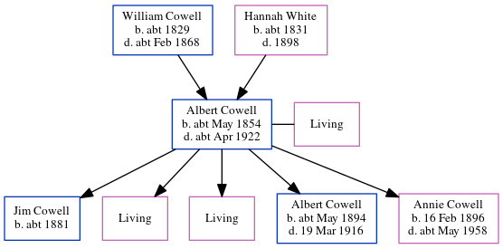

Emily Hannah Cryer (née Cowell) cAug 1856 - c1897
[ Home ] | [ Calendar ] | [ Surnames Index ] | [ Errors ] | [ Family History ]The child of William Cowell (a carter) and Hannah White, Emily Cowell, the first cousin three-times-removed on the mother's side of Nigel Horne, was born in Wingham, Kent, England c. Aug 18561,2 and baptised there at St Mary The Virgin's Church on 7 Dec 1856. She married Joseph Cryer there at St Mary The Virgin's Church on 26 Aug 18764.
During her life, she was living at Chalk Pit in Wingham on 7 Apr 18618; and in Sibertswold, Kent, England in 1891.
She died c. Feb 1897 in Eastry, Kent, England3 and was buried at Ss Peter & Paul, Eythorne, Kent on 17 Mar 18975,6,7.
Parents
- William was born c. 1829
- Hannah D was born c. 1831
Citations
- England & Wales births 1837-2006 - Findmypast
- Kent, Canterbury Archdeaconry Marriages - Findmypast
- England & Wales deaths 1837-2007 - Findmypast
- England & Wales Marriages 1837-2005 - Findmypast
- Kent, Canterbury Archdeaconry Burials - Findmypast
- England Deaths & Burials 1538-1991 - Findmypast
- England Deaths & Burials 1538-1991 - Findmypast
- 1861 England, Wales & Scotland Census - Findmypast (was age 4 and the daughter of the head of the household)
Media
1861 England, Wales & Scotland Census Transcription - GBC-1861-0003563930
1871 England, Wales & Scotland Census Transcription - GBC-1871-0014298516
England & Wales marriages 1837-2005 Transcription - BMD-M-1876-3-AZ-000061-018
Kent, Canterbury Archdeaconry Marriage Banns Transcription - GBPRS-CANT-M-94073230-2
Kent, Canterbury Archdeaconry marriages - GBPRS/CANT/M/97246822/2
1891 England, Wales & Scotland Census Transcription - GBC-1891-0005980783
England & Wales deaths 1837-2007 - BMD/D/1897/1/AZ/000088/215
Kent, Canterbury Archdeaconry burials - GBPRS/CANT/D/95597152
Kent Baptisms - GBPRS/CANT/B/96570691
England Births & Baptisms 1538-1975 - R_884740026
England Births & Baptisms 1538-1975 - R_884743552
England Deaths & Burials 1538-1991 - R_277200725
England Deaths & Burials 1538-1991 - R_276339267
Family Tree
Map
Generated by ged2site. Last updated on Jul 3, 2024
Known Issues
Residence record for 1891 contains no citation
Location for 1861 (Chalk Pit, Wingham, Kent, England) differs from mother's (Wingham, Kent, England)
Date of residence (7 Apr 1861) differs from mother's in same year (1861)
Listed in the residence for 1891, but spouse Joseph Cryer is not